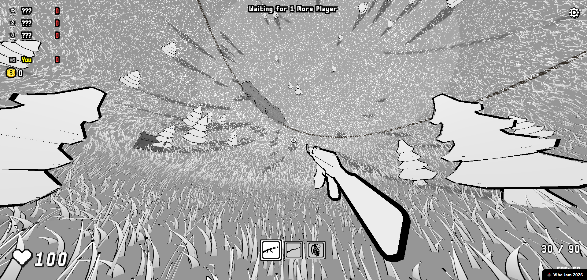

Follow the surface.
Movement stays attached to the curve of the sphere. You can keep walking around the world rather than reaching a conventional edge.
Undersphere takes a familiar first-person shooter and puts it inside a spherical world. As you walk around the surface, gravity follows you. That change affects how you move, how you read the environment, and where you expect the next shot to come from.
Play Undersphere
Movement stays attached to the curve of the sphere. You can keep walking around the world rather than reaching a conventional edge.
A spherical environment changes the usual sense of up and down. Navigating the space is part of learning how to play.
The game runs in the browser. It won Most Unique at levelsio’s Vibe Jam for its take on a first-person shooter.
A familiar kind of game, with one change that makes the whole world feel different.